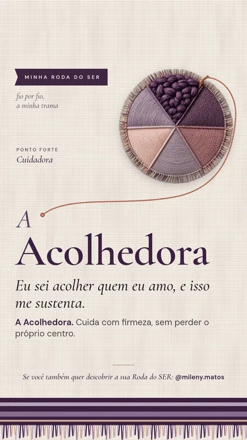
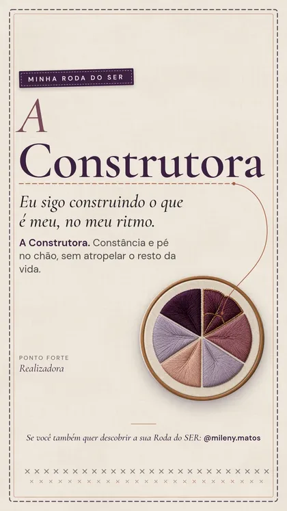
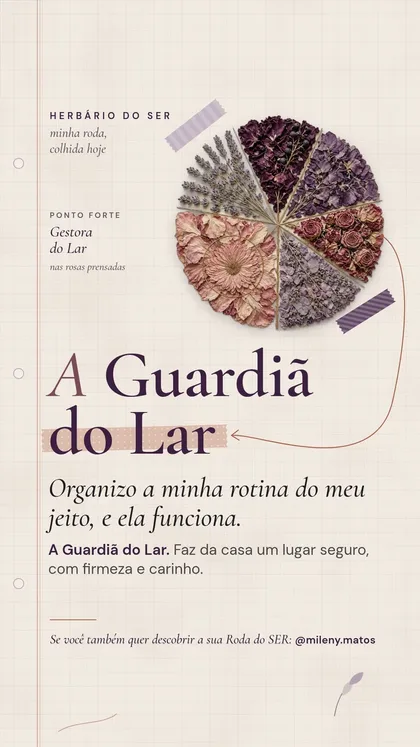
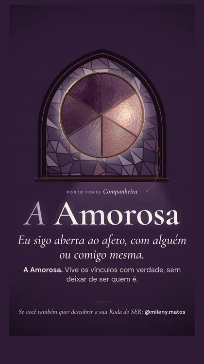
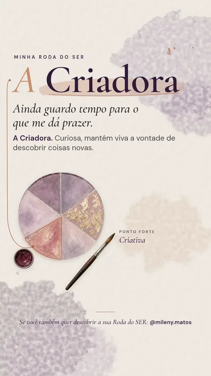
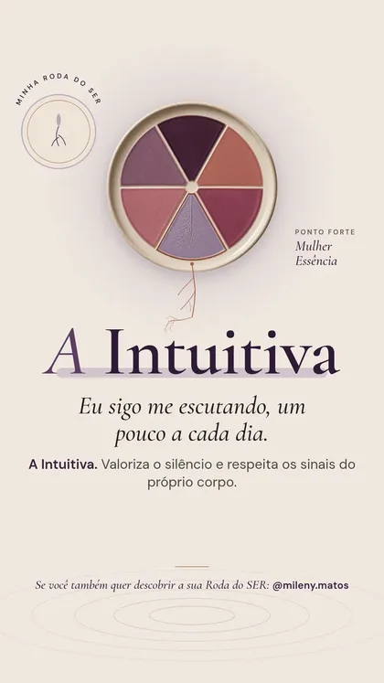

Responda
Quatro frases para cada um dos seis papéis. Quanto mais perto do 10, mais a frase descreve o seu momento.
Método SER · criado por Mileny Matos
Um mapa para olhar a sua energia com carinho.
Você vive muitos papéis ao mesmo tempo. Cuida, trabalha, organiza a casa, ama, cria. No meio disso tudo, é comum a gente se deixar para depois. A Roda do SER mostra como está a sua energia em seis papéis da sua vida, hoje.
Os seis papéis da roda
Cada pétala é uma parte da sua vida. Toque em um papel para ver o que ele olha, uma das frases da roda e o perfil que ele pode revelar.
Uma das frases da roda
No Método SER:
Como funciona
Para cada frase, você escolhe um número de 1 a 10. Não existe resposta certa: vale o que é verdade para você agora.
Quatro frases para cada um dos seis papéis. Quanto mais perto do 10, mais a frase descreve o seu momento.
Cada papel recebe uma nota, e as pétalas desenham o mapa da sua energia hoje: onde ela sobra e onde está faltando.
O papel mais preservado, combinado com o desenho da sua roda, revela um entre 27 perfis, com uma frase que é sua.
Energia: você tem fôlego para o que esse papel pede? Quando é ela que falta, o que pesa é o cansaço.
Lugar para você: você se inclui nesse papel? Quando é isso que falta, o que aparece é o autoabandono.
Experimente agora
Responda 6 das 24 frases, uma de cada papel, e veja as pétalas ganharem forma.
A roda completa, com as 24 frases, mostra o seu perfil, uma leitura do seu momento na voz da Mileny e um story feito só para você.
A prévia roda só no seu navegador: nada é enviado ou guardado.
O que você recebe
Como “A Acolhedora”, “A Construtora” ou “A Intuitiva”, com uma frase que traduz o que a sua roda tem de mais forte.
O desenho da sua roda, o papel que pede mais atenção, uma pergunta para levar e um primeiro passo possível.
Uma arte exclusiva com a sua roda e o seu perfil, pronta para baixar e compartilhar.






O desenho da sua roda
O formato das pétalas mostra como a sua energia está distribuída. Os exemplos abaixo são ilustrativos.
Quase todos os papéis pedindo mais energia do que você tem. Fala de sobrecarga, não de quem você é.
Papéis bem nutridos ao lado de outros desgastados. Mostra onde você tem se colocado por último.
Os papéis na faixa do meio: você está dando conta, mas com pouca folga.
Uma roda ampla e nutrida na maioria dos papéis. Vale reconhecer o que tem ajudado.
Roda do SER e Método SER
A roda é o primeiro olhar consciente: reconhecer, sem culpa, onde a sua energia está indo.
Cada leitura aponta um movimento do método, como Raiz, Clareza, Compromisso ou Ferramentas.
Refazer a roda ao longo do tempo ajuda a perceber o que mudou e o que vale manter.
A Roda do SER nasceu do Método SER, a metodologia autoral de Mileny Matos para mulheres que querem mudanças com acolhimento, método e leveza.
Conhecer o Método SERDepois da roda
Na Conversa de Clareza, só você e a Mileny olham a sua roda ao vivo e conversam sobre o papel que mais pede atenção. A ideia é você sair com mais clareza do que pesa e com um primeiro passo possível.
Perguntas frequentes
Sim. Você responde as 24 frases, descobre o seu perfil, recebe a leitura do seu momento e baixa o seu story sem pagar nada. A Conversa de Clareza com a Mileny também é gratuita.
Não. O site não guarda as suas respostas. No final, existe um formulário opcional, “Quer guardar a sua roda?”, para quem quiser que a Mileny guarde o resultado e entre em contato. Ele só é enviado com o seu consentimento, seguindo a LGPD.
No papel da Companheira, você pode marcar “Este papel não se aplica a mim no momento”. Ele vale para quem está numa relação e para quem não está, incluindo a relação que você tem consigo mesma.
Não. A Roda do SER é um exercício de autorreflexão. Ela não faz avaliação clínica e não substitui acompanhamento médico ou psicológico. Se você está passando por um sofrimento intenso, procure também um profissional de saúde.
Pode, e vale a pena. A roda muda com as fases da vida, e refazê-la de tempos em tempos ajuda a perceber cedo quando algo começa a pesar.
Se fizer sentido, poste o seu story e marque @mileny.matos. E, se quiser entender o que a sua roda mostra, agende a sua Conversa de Clareza pelo WhatsApp.
Faça a sua
Você não precisa dar conta de tudo para começar a se olhar. Cinco minutos, 24 frases e um mapa que é só seu.
A Roda do SER é um exercício de autorreflexão. Ela não faz avaliação clínica e não substitui acompanhamento médico ou psicológico. Se você está passando por um sofrimento intenso, procure também um profissional de saúde.